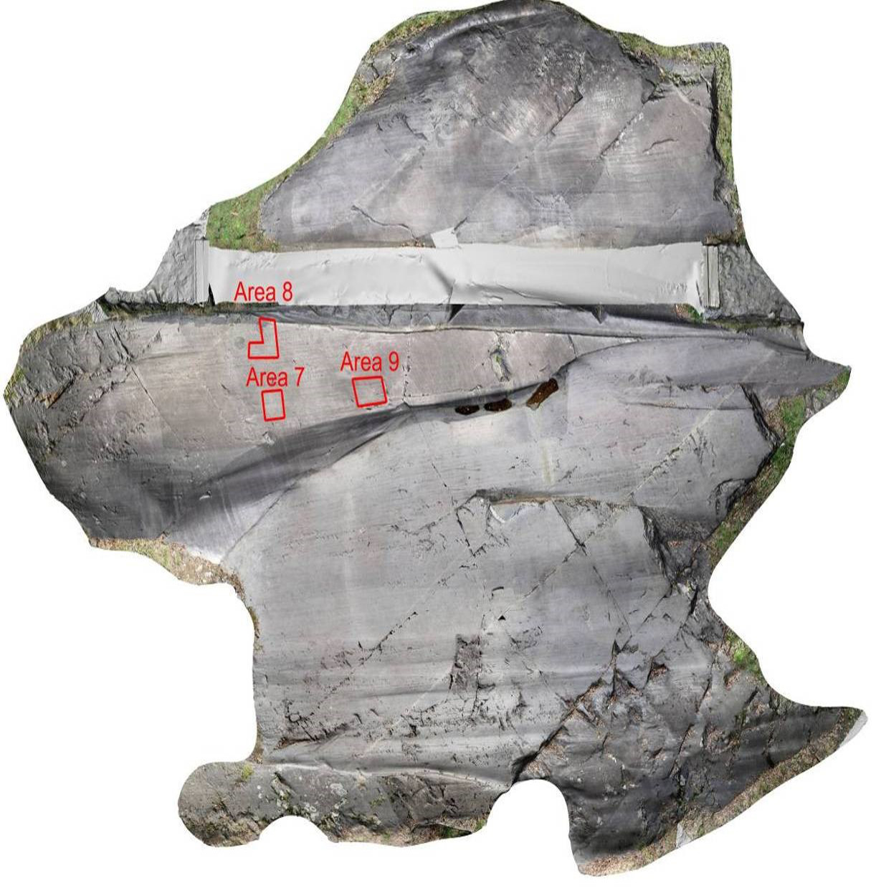

Foppe di Nadro
Foppe di Nadro Rock 24 was scanned with a terrestrial laser scanner in a model resolution of 5 mm. The rock has numerous Pitoti and has an overall size of 17.7 x 13.3 m.

This rock art panel is
called Foppe di Nadro.
Click on the hotspots
to find out more